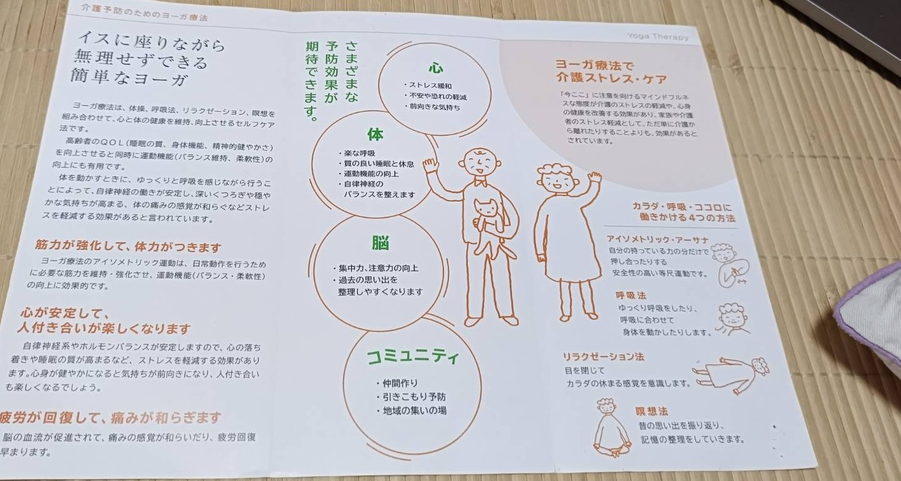

LESSON & PRICE
心身の状態やご希望にあわせて、グループ・個別・オンラインからお選びいただけます。料金は目安です。詳しくはお問い合わせください。
GROUP VISIT
はたけもり他、生野区内の施設・団体向け
イスに座りながら、無理せずできる簡単なヨガです。体操、呼吸法、リラクゼーション、瞑想を組み合わせて、心と体の健康を維持・向上させるセルフケア法。高齢者の方のQOL（睡眠の質、身体機能、精神的健やかさ）を向上させると同時に、運動機能（バランス維持、柔軟性）の向上にも有用です。体を動かすときに、ゆっくりと呼吸を感じながら行うことによって、自律神経の働きが安定し、深いくつろぎや穏やかな気持ちが高まる、体の痛みの感覚が和らぐなどストレスを軽減する効果があると言われています。
筋力が強化して、
体力がつきます
アイソメトリック運動は、日常動作を行うために必要な筋力を維持・強化させ、運動機能（バランス・柔軟性）の向上に効果的です。
心が安定して、
人付き合いが楽しくなります
自律神経系やホルモンバランスが安定し、心の落ち着きや睡眠の質が高まるなど、ストレスを軽減する効果があります。気持ちが前向きになり、人付き合いも楽しくなるでしょう。
疲労が回復して、
痛みが和らぎます
脳の血流が促進されて、痛みの感覚が和らいだり、疲労回復が早まります。
さまざまな予防効果が期待できます
心
体
脳
コミュニティ
ヨーガ療法で介護ストレス・ケア
「今ここ」に注意を向けるマインドフルネスな態度が介護のストレスの軽減や、心身の健康を改善する効果があり、家族や介護者のストレス軽減として、ただ単に介護から離れたりすることよりも、効果があるとされています。
はたけもりさん他、生野区内の施設に出張してお伝えしているほか、毎年お祭りの日には弥栄神社さんの拝殿でも開催しています。企業・地域サークルなど、他団体でのご利用もご相談ください。

ご案内チラシ（介護予防のためのヨーガ療法）
お申込みの流れ
STEP 1
お問い合わせ
STEP 2
ご希望のヒアリング
STEP 3
内容・お見積りのご案内
STEP 4
日程調整・実施
GROUP
やさしい回復ヨガ・呼吸法を少人数で
寝転んだ姿勢や椅子を使った動きを中心に、ゆっくりと身体をほぐしていきます。呼吸法とかんたんな瞑想もあわせて行い、心身ともにリラックスできる内容です。運動が久しぶりの方、体力に自信のない方も安心してご参加いただけます。
PRIVATE
認定ヨーガ療法士によるマンツーマン指導
おひとりおひとりの体調やお悩みをうかがったうえで、その方に合わせたヨガ療法を行います。不調の改善や、特定のお悩み（不眠・ストレス・慢性的な痛みなど）にじっくり向き合いたい方におすすめです。
ONLINE
ご自宅から、ビデオ通話でご参加いただけます
お近くに教室がない方、外出が難しい方にもご利用いただけるオンラインレッスンです。グループ・個別どちらの形式にも対応しています。カメラをオフにしたままのご参加も可能ですので、気軽にご相談ください。
まずは体験レッスンから、お気軽にどうぞ。
ご不安な点、体調に関するご相談もお気軽にお寄せください。
お問い合わせ・お申込み →